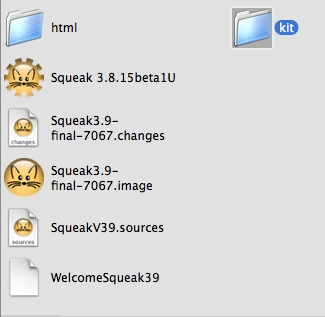
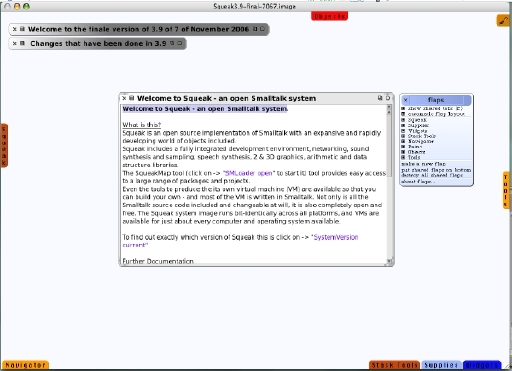

Backup installation files
The first thing I like to do with a fresh image is back things up. I prefer to keep backup copies of the original Squeak image files in case I need to start over. I usually create a folder named "kit" where I put copies of all the original install files.
Let's launch Squeak and do some initial setup and organization in the environment.
